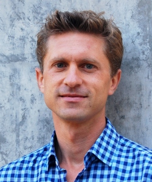

Contact Information
Engineering 2, room 217
University of California, Santa Cruz
ude.cscu@ztilh

Welcome to my webpage! I am an Associate Professor in the Computer Science & Engineering (CSE) Department of the Baskin School of Engineering at the University of California Santa Cruz.
I hold the Kumar Malavalli Endowed Chair of Storage Systems Research and I am the Director of the Center for Research in Storage Systems (CRSS).
I am also a member of UCSC's Hardware Systems Collective (HSC).
My general research interests are in computer architecture and systems, whereas
my current work focusses on improving the hardware-software interface of general purpose processors for emerging data center workloads. I design new microarchitectural mechanisms for the frontend (branch predictor, BTB, instruction cache), mid end (scheduler), and back end (prefetching, memory hierarchy), leveraging compiler and profile-guided optimization techniques.
I held visting faculty positions at the Massachusetts Institute of Technology (MIT) in Cambridge and was a research scientist at Google. Previously, I was Postdoc at Stanford University where I worked with Christos Kozyrakis and David Cheriton. I received my PhD from Mannheim University.
I have open PhD, MS, and Postdoc positions in the area of core microarchitecture. If you are interested, please get in contact with me and reference my name in your statement when applying at UCSC.
Curriculum Vitae
Full CV
Teaching
-
CSE120 - Computer Architecture: Fall'19, Winter'20, Fall'21, Winter'22, Fall'23, Winter'25
-
CSE121 - Embedded Systems: Fall'22
-
CSE125/CSE225 - Hardware Design with Verilog: Spring'19, Spring'20, Spring'21
-
CSE220 - Advanced Computer Architecture: Winter'21, Spring'23, Fall'24
-
CSE226 - Advanced Parallel Programming: Winter'19, Fall'20
-
CSE226 - Computer Systems and Assembly Language and Lab: Winter'24
Office Hours
On request. Please send me an email.
Students
Graduated Students
Support
I am grateful to NSF, Intel, Samsung, Google, and Facebook for supporting my research.
Publications
-
Kan Zhu, Yilong Zhao, Yufei Gao, Peter Braun, Tanvir Ahmed Khan, Heiner Litz, Baris Kasikci, Shuwen Deng
From Optimal to Practical: Efficient Micro-op Cache Replacement Policies for Data Center Applications
In the International Symposium on Computer Architecture (HPCA), 2025.
-
Yi Liu, Minghao Xie, Shouqian Shi, Yuanchao Xu, Heiner Litz, Chen Qian
Outback: Fast and Communication-efficient Index for Key-Value Store on Disaggregated Memory
The 51st International Conference on Very Large Data Bases (VLDB), 2025.
-
Minghao Xie, Chen Qian, Heiner Litz
En4S: Enabling SLOs in Serverless Storage Systems
in Symposium on Cloud Computing (SoCC), 2024
-
Jayjeet Chakraborty, Matthieu Dorier, Philip Carns, Robert Ross, Carlos Maltzahn, Heiner Litz
Thallus: An RDMA-based Columnar Data Transport Protocol
in the 2nd Workshop on Hot Topics in System Infrastructure (HotInfra), 2024
in Symposium on Cloud Computing (SoCC), 2024
-
Surim Oh, Mingsheng Xu, Tanvir Ahmed Khan, Baris Kasikci, Heiner Litz
UDP: Utility-Driven Fetch Directed Instruction Prefetching
in the 51th International Symposium on Computer Architecture (ISCA), 2024
[PDF]
-
Yuxuan Zhang, Nathan Sobotka, Soyoon Park, Saba Jamilan, Tanvir Ahmed Khan, Baris Kasikci, Gilles Pokam, Heiner Litz, Joseph Devietti
RPG^2: Robust Profile-Guided Runtime Prefetch Generation
in the 29th International Conference on Architectural Support for Programming Languages and Operating Systems (ASPLOS'29), 2024
[PDF]
-
Yuanjiang Ni, Pankaj Mehra, Ethan Miller, Heiner Litz
TMC: Near-Optimal Resource Allocation for Tiered-Memory Systems
in Symposium on Cloud Computing (SoCC), 2023
[PDF]
-
Lokesh N. Jaliminche, Chandranil (Nil) Chakraborttii, Changho Choi, Heiner Litz
Enabling Multi-tenancy on SSDs with Accurate IO Interference Modeling
in Symposium on Cloud Computing (SoCC), 2023
[PDF]
-
Yuxuan Zhang, Tanvir Ahmed Khan, Gilles Pokam, Baris Kasikci, Heiner Litz, Joseph Devietti
Online COde Layout OptimizationS via OCOLOS
IEEE MICRO TOP PICK 2023
-
Yi Liu, Shouqian Shi, Minghao Xie, Heiner Litz, and Chen Qian
SMASH: Flexible, Fast, and Resource-efficient Placement and Lookup of Distributed Storage
in Measurement and Analysis of Computing Systems (SIGMETRICS), 2023
[PDF]
-
Tanvir Ahmed Khan, Muhammed Ugur, Krishnendra Nathella, Dam Sunwoo, Heiner Litz, Daniel A. Jimenez, Baris Kasikci
Whisper: Profile-Guided Branch Misprediction Elimination for Data Center Applications
in the 55th Annual IEEE/ACM International Symposium on Microarchitecture (MICRO), 2022
BEST PAPER [PDF]
-
Yuxuan Zhang, Tanvir Ahmed Khan, Gilles Pokam, Baris Kasikci, Heiner Litz, Joseph Devietti
OCOLOS: Online COde Layout OptimizationS
in the 55th Annual IEEE/ACM International Symposium on Microarchitecture (MICRO), 2022
[PDF]
-
Shixin Song, Tanvir Ahmed Khan, Sara Mahdizadeh Shahri, Akshitha Sriraman, Niranjan K Soundararajan, Sreenivas Subramoney, Daniel A Jiménez, Heiner Litz, and Baris Kasikci
Thermometer: Profile-Guided BTB Replacement for Data Center Applications.
in the 49th International Symposium on Computer Architecture (ISCA), 2022
[PDF]
-
Saba Jamilan, Tanvir A. Khan, Grant Ayers, Baris Kasikci, Heiner Litz
APT-GET: Profile-Guided Timely Software Prefetching
in the The European Conference on Computer Systems (EuroSys), 2022
[PDF]
-
Heiner Litz, Grant Ayers, Parthasarathy Ranganathan
CRISP: Critical Slice Prefetching
in the 27th International Conference on Architectural Support for Programming Languages and Operating Systems (ASPLOS'27), 2022
[PDF] [VIDEO]
-
Devashish R Purandare, Peter Wilcox, Heiner Litz, Shel Finkelstein
Append is Near: Log-based Data Management on ZNS SSDs
The Conference on Innovative Data Systems Research (CIDR'22), 2022
[PDF]
-
Tanvir Ahmed Khan, Nathan Brown, Akshitha Sriraman, Niranjan K Soundararajan, Rakesh Kumar, Joseph Devietti, Sreenivas Subramoney, Gilles A Pokam, Heiner Litz, Baris Kasikci
Twig: Profile-Guided BTB Prefetching for Data Center Applications
in the 54th Annual IEEE/ACM International Symposium on Microarchitecture (MICRO), 2021
[PDF]
-
Niranjan K Soundararajan, Peter Braun, Tanvir Ahmed Khan, Baris Kasikci, Heiner Litz, Sreenivas Subramoney
PDede: Partitioned, Deduplicated, Delta Branch Target Buffer
in the 54th Annual IEEE/ACM International Symposium on Microarchitecture (MICRO), 2021
[PDF]
-
Tanvir Ahmed Khan, Dexin Zhang, Akshitha Sriraman, Joseph Devietti, Gilles Pokam, Heiner Litz, Baris Kasikci
Ripple: Profile-Guided Instruction Cache Replacement for Data Center Applications
in the 48th International Symposium on Computer Architecture (ISCA), 2021
[PDF]
-
Heiner Litz, Javier Gonzalez, Ana Klimovic, Christos Kozyrakis
RAIL: Predictable, Low Tail Latency for NVMe Flash
ACM Transactions on Storage (TOS), 2021
[PDF]
-
Chandranil Chackraborttii, Heiner Litz
Reducing Write Amplification in Flash by Death-time Prediction of Logical Block Addresses
in the 14th International System and Storage Conference (SYSTOR), 2021
[PDF]
-
Saeed Kargar, Heiner Litz, Faisal Nawab
Predict and Write: Using K-Means Clustering to Extend the Lifetime of NVM Storage
in the 37th IEEE International Conference on Data Engineering (ICDE), 2021
[PDF]
-
Tanvir Ahmed Khan, Akshitha Sriraman, Joseph Devietti, Gilles Pokam, Heiner Litz, Baris Kasikci
I-SPY: Context-Driven Conditional Instruction Prefetching with Coalescing
in the 53nd Annual IEEE/ACM International Symposium on Microarchitecture (MICRO), 2020
[PDF]
-
Chandranil Chakraborttii, Heiner Litz
Improving the Accuracy, Adaptability, and Interpretability of SSD Failure Prediction Models
in the ACM Symposium on Cloud Computing 2020 (SoCC), 2020
[PDF]
-
Chandranil Chakraborttii, Heiner Litz
Learning I/O Access patterns to Improve Prefetching in SSDs
in the European Conference on Machine Learning and Principles and Practice of Knowledge Discovery in Databases (ECML-PKDD), 2020
[PDF][CODE]
-
Nayana Prasad Nagendra,
Grant Ayers,
David I. August,
Hyoun Kyu Cho,
Svilen Kanev,
Christos Kozyrakis,
Trivikram Krishnamurthy,
Heiner Litz,
Tipp Moseley, Parthasarathy Ranganathan
AsmDB: Understanding and Mitigating Front-end Stalls in Warehouse-Scale Computers
IEEE MICRO TOP PICK 2019
[PDF]
-
Grant Ayers, Heiner Litz, Christos Kozyrakis, Parthasarathy Ranganathan
Classifying Memory Access Patterns for Prefetching
in the 25th International Conference on Architectural Support for Programming Languages and Operating Systems (ASPLOS'25), 2020
[PDF]
-
Yuanjiang Ni, Jishen Zhao, Heiner Litz, Daniel Bittman, Ethan L. Miller
SSP: Eliminating Redundant Writes in Failure-Atomic NVRAMs via Shadow Sub-Paging
in the 52nd Annual IEEE/ACM International Symposium on Microarchitecture (MICRO), 2019
[PDF]
-
Grant Ayers,
Nayana Prasad Nagendra,
David I. August,
Hyoun Kyu Cho,
Svilen Kanev,
Christos Kozyrakis,
Trivikram Krishnamurthy,
Heiner Litz,
Tipp Moseley, Parthasarathy Ranganathan
AsmDB: Understanding and Mitigating Front-end Stalls in Warehouse-Scale Computers
in the 46th International Symposium on Computer Architecture (ISCA), 2019
[PDF]
-
Milad Hashemi, Kevin Swersky, Jamie A. Smith, Grant Ayers, Heiner Litz, Jichuan Chang, Christos Kozyrakis, Parthasarathy Ranganathan
Learning Memory Access Patterns
in the 35th International Conference on Machine Learning (ICML), 2018
[PDF]
-
Ana Klimovic, Heiner Litz, Christos Kozyrakis
Selecta: Learning Heterogeneous Cloud Storage Configuration for Data Analytics
in the 2018 USENIX Annual Technical Conference (USENIX'18), 2018
[PDF]
-
Samuel Grossman, Heiner Litz, Christos Kozyrakis
Making Pull-Based Graph Processing Performant
in the 23rd ACM SIGPLAN Symposium on Principles and Practice of Parallel Programming (PPoPP'23), 2018
[PDF][CODE]
-
Ana Klimovic, Heiner Litz, Christos Kozyrakis
ReFlex: Remote Flash == Local Flash
in the 22nd International Conference on Architectural Support for Programming Languages and Operating Systems (ASPLOS'22), 2017
[PDF][CODE]
-
Heiner Litz, Benjamin Braun, David Cheriton
EXCITE-VM: Extending the Virtual Memory System to Support Snapshot Isolation Transactions
in the 25th International Confernce on Parallel Architectures and Compilation Techniques (PACT'25), 2016
[PDF]
-
Heiner Litz, Ricardo J. Dias, David Cheriton
Efficient Correction of Anomalies in Snapshot Isolation Transactions
in ACM Transactions on Architecture and Code Optimization (TACO), 2015
[PDF]
-
Heiner Litz, David Cheriton, Amin Firozshahian, Omid Azizi, J. Peter Stevenson
SI-TM: Improving Transactional Memory Abort Rates through Snapshot Isolation
in Proceedings of the 19th Internation Conference on Architectural Support for Programming Languages and Operating Systems (ASPLOS'19), March 2014
[PDF]
-
Bo Wang, Heiner Litz, David Cheriton
HICAMP Bitmap: Space-efficient Updatable Bitmap Index for In-memory Databases
In 10th International Workshop on Data Management on New Hardware (DAMON'10), June 2014
[PDF]
-
Michael Chan, Heiner Litz, David Cheriton
Rethinking Network Stack Design with Memory Snapshots
in Proceedings of the 14th Usenix Workshop on Hot Topics in Operating Systems (HotOS'14)
[PDF]
- Holger Fröning, Mondrian Nüssle, Heiner Litz, Christian Leber and Ulrich Brüning
On Achieving High Message Rates
in Proceedings of the 13th IEEE/ACM International Symposium on Cluster, Cloud and Grid Computing (CCGrid-2013), May 13-16, 2013, Delft, The Netherlands
[PDF]
- Heiner Litz, Christian Leber, Benjamin Geib
DSL Programmable Engine for High Frequency Trading Acceleration
in Proceedings of the 4th Workshop on High Performance Computational Finance (WHPCF-2011), co-located with SC11, November 13th, 2011, Seattle, USA
[PDF]
- Christian Leber, Benjamin Geib, Heiner Litz
High Frequency Trading Acceleration using FPGAs
in Proceedings of the 21rd International Conference on Field Programmable Logic and Applications (FPL'21), September 5-7, 2011, Chania, Greece
[PDF]
- Heiner Litz, Maximilian Thürmer, Ulrich Brüning
TCCluster: A Cluster Architecture Utilizing the Processor Host Interface as a Network Interconnect
in Proceedings of IEEE International Conference on Cluster Computing (CLUSTER), September 20-24, 2010, Heraklion, Greece
[PDF]
- Holger Fröning and Heiner Litz
Efficient Hardware Support for the Partitioned Global Address Space
in Proceedings of the 10th Workshop on Communication Architecture for Clusters (IPDPSW), co-located with the 24th International Parallel and Distributed Processing Symposium (IPDPS 2010), April 19, 2010, Atlanta, Georgia
[PDF]
- Heiner Litz, Holger Fröning, Maximilian Thürmer, Ulrich Brüning
An FPGA based Verification Platform for HyperTransport 3.x
in Proceedings of the 19th International Conference on Field Programmable Logic and Applications (FPL'19), August 31 - September 2, 2009, Prag, Czech Republic
[PDF]
- Heiner Litz, Holger Fröning, Ulrich Brüning
A HyperTransport 3 Physical Layer Interface for FPGAs
in Proceedings of the 5th International Workshop on Applied Reconfigurable Computing (ARC'6)
, March 16 - 18, 2009, Karlsruhe, Germany
[PDF]
Best paper award!
- Holger Fröning, Heiner Litz, Ulrich Brüning
Efficient Virtualization of Network Interfaces
in Proceedings of the 8th International Conference on Networks (ICN'8), March 1-6, 2009, Guadeloupe/France
[PDF]
- Benjamin Kalisch, Alexander Giese, Heiner Litz, Ulrich Brüning
HyperTransport 3 Core: A Next Generation Host Interface with Extremely High Bandwidth
in Proceedings of the 1st International Workshop on HyperTransport Research and Applications (WHTRA-2009), February 12th, 2009, Mannheim, Germany
[PDF]
- Heiner Litz, Holger Fröning, Mondrian Nüssle, Ulrich Brüning
VELO: A Novel Communication Engine for Ultra-low Latency Message Transfers
In Proceedings of the 37th International Conference on Parallel Processing (ICPP-2008), Sep. 8 - 12, 2008, Portland, USA
Best paper award!
[PDF]
- Mondrian Nüssle, Holger Fröning, Alexander Giese, Heiner Litz, David Slogsnat, Ulrich Brüning
A Hypertransport based low-latency reconfigurable testbed for message-passing developments
in Proceedings of the 2nd Workshop Kommunikation in Clusterrechnern und Clusterverbundsystemen (KiCC'07), TU Chemnitz, February 2007.
- Holger Fröning, Mondrian Nüssle, David Slogsnat, Heiner Litz, Ulrich Brüning
The HTX-Board: A Rapid Prototyping Station
in Proceedings of the 3rd annual FPGAworld Conference (FPGA-2006), Nov. 16, 2006, Stockholm, Sweden.
- Yun Ding, Heiner Litz
Creating Multiplatform User Interfaces by Annotation and Adaptation'
Proceedings of International Conference on Intelligent User Interfaces (IUI'11), Sydney, Australia, 29 January 2006 -- 1 February 2006
- Yun Ding, Heiner Litz, Dennis Pfisterer
A graphical single-authoring framework for building multi-platform user interfaces
Proceedings of the Conference on Computer Aided Design of User Interfaces (CADUI), held with the International Conference on Intelligent User Interfaces (IUI'9), Funchal, Portugal, 14-16 January 2004
- Yun Ding, Heiner Litz, Rainer Malaka and Dennis Pfisterer
On Programming Information Agent Systems - An Integrated Hotel Reservation Service as Case Study
Proceedings of the first German Conference on Multiagent System Technologies (MATES'03), 2003
Support
Our group's research is generously supported by -- NSF, Intel, Google, Samsung, Meta, Nutanix, HPE, ARM, Marvell, Cerabyte, Western Digital, Broadcom
|